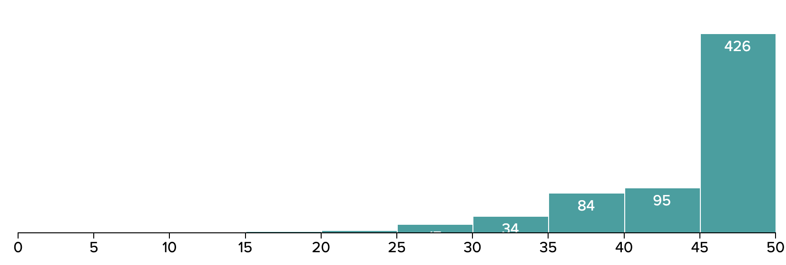

CS 106A Diagnostic Grades
Getting Your Diagnostic Grade: Diagnostic Grades have been
released on
Gradescope. If
you don't see your grade there, please email Brahm as soon as
possible.
Questions & Solutions
Statistics
The median score on the CS 106A Diagnostic was 47/50 and the mean
score was 44.5. The standard deviation was 6.49. A full score
distribution is reproduced below:

While the most important signal the diagnostic provides is on your own
understanding of the material, we provide you these statistics so that
you have a sense of where you might be expected to be at this point.
Given this, perhaps the most important piece of information here is
the median score: if you had a result that was around or above the
median, you are likely where we expect most students to be at this
point in the class. If your score is significantly lower than the
median, that might be a sign that it's worth recosidering your
strategy in the class, and we'll discuss how we can help you with that
later in this handout.
Regrade Requests
We try to grade as consistently as possible, but we are human and we
might make mistakes. If you feel like one of your problems was
misgraded, please file a regrade request on Gradescope between
Wednesday May 6th at 12pm and Sunday May 10th at 12pm.
Note that this is the only way to have your regrade request
considered; in particular, asking your section leader to take a quick
look to see whether a problem was misgraded isn't a way of short
circuiting this process. We want you to have the credit you deserve,
but filing a formal request helps us make sure that your request goes
to the right person.
Note that we graded your diagnostics according to a clear rubric, so
we won't be considering regrade requests that simply claim a
particular deduction is too harsh, but rather those that argue that a
particular criteria was misapplied to a solution.
Interpreting your Diagnostic Grade
In general, we were very pleased with how students did in the
diagnostic. It had some tricky questions on it and as a whole, the
results indicate that you all have a very solid grasp on the most
important takeaways of the last few weeks.
That said, the primary goal of the diagnostic was to provide you with
a perspective on where you were in the class, as well as what offer
feedback on what to work towards moving forwards. With that in mind,
we wanted to provide some general guidelines and things to think about
as you go over your solutions and perhaps your strategy:
I did great on the diagnostic! What does this mean?
Congratulations! Doing well on the diagnostic is an indication that
you're comfortable with the tools you've learned about thus far in the
class.
With the only formal assessment in the class out of the way, you now
have the opportunity to sink your teeth into applying this
understanding to a variety of exciting contexts. The assignments
coming up will cover a variety of such applications, and we encourage
you to think about ways you could extend their functionality to
practice what you know. Stopping by office hours to discuss parts of
the class that interest you is also a really good way of developing
your mastery of course material.
Keep in mind that you should continue to make sure that your
understanding of course material has a solid foundation; it's easy to
become complacent and that can present a challenge in the later part
of the course.
I did okay on the diagnostic! What does this mean?
If you scored around or slightly below the median score on the
diagnostic, you're where we expect you to be - you likely have at
least a decent sense of how the material fits together, although there
We'd strongly recommend you take a look at the things you missed in
your solutions. Often, these are simple conceptual issues or cases you
forgot to consider, and while these are easy fixes, it's important
that you start instituting them early to make your life easier in the
long run.
Once you've identified the areas that you're a little shaky on, start
thinking about ways you might reinforce your understanding. Consider
stopping by office hours, the Conceptual LaIR, posting on Ed, or going
through the
Python Reader. Additionally, note that all the resources discussed in the next
section are also available to you.
I didn't do as well as I wanted to on the diagnostic. What does this
mean?
Computer Science is a hard thing to learn. For most people taking CS
106A (including Brahm!), it's the first time they are ever exposed to
a subject that requires this mode of thought and it's totally
understandable to take some time adjusting to it. We know that this
class asks a lot of you, and we want you to know that this diagnostic
is not a statement of your potential as a Computer Scientist, or even
of your potential to succeed in this class. We believe in you!
That said, now might be a good time to revisit your approach to the
class, and we're providing a few resources for you here:
We know it can be discouraging to see a score on an assessment that
isn't as high as you'd want it to be, but keep in mind that if you're
able to come out of this with an idea of how to approach the class,
the diagnostic has done its job. You have plenty of opportunities to
demonstrate your understanding of the material as the class
progresses: the diagnostic is 15% of your grade, and the assignments
in the class constitute 75% of your grade, so each assignment serves
as another diagnostic, or chance to show us what you can do!